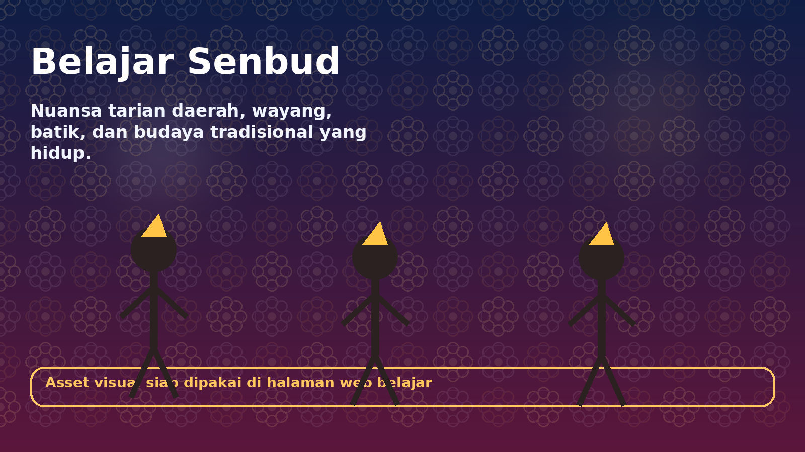
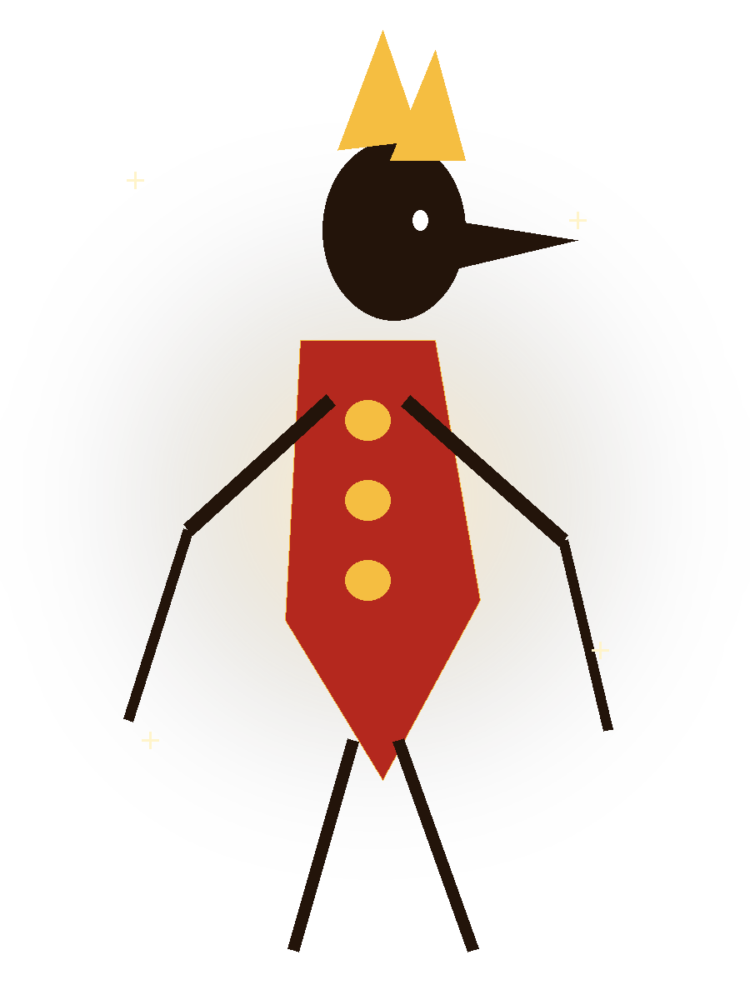
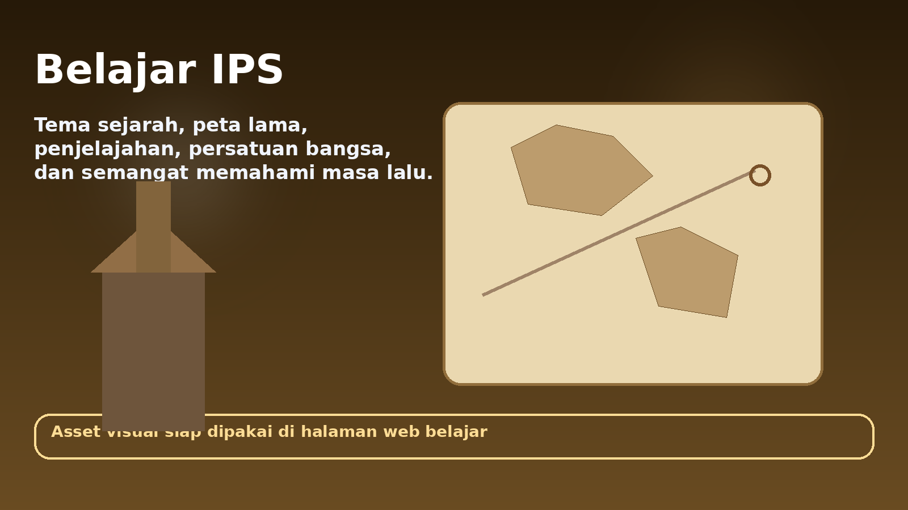
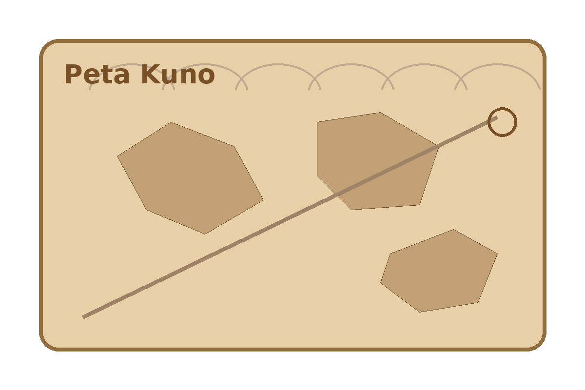
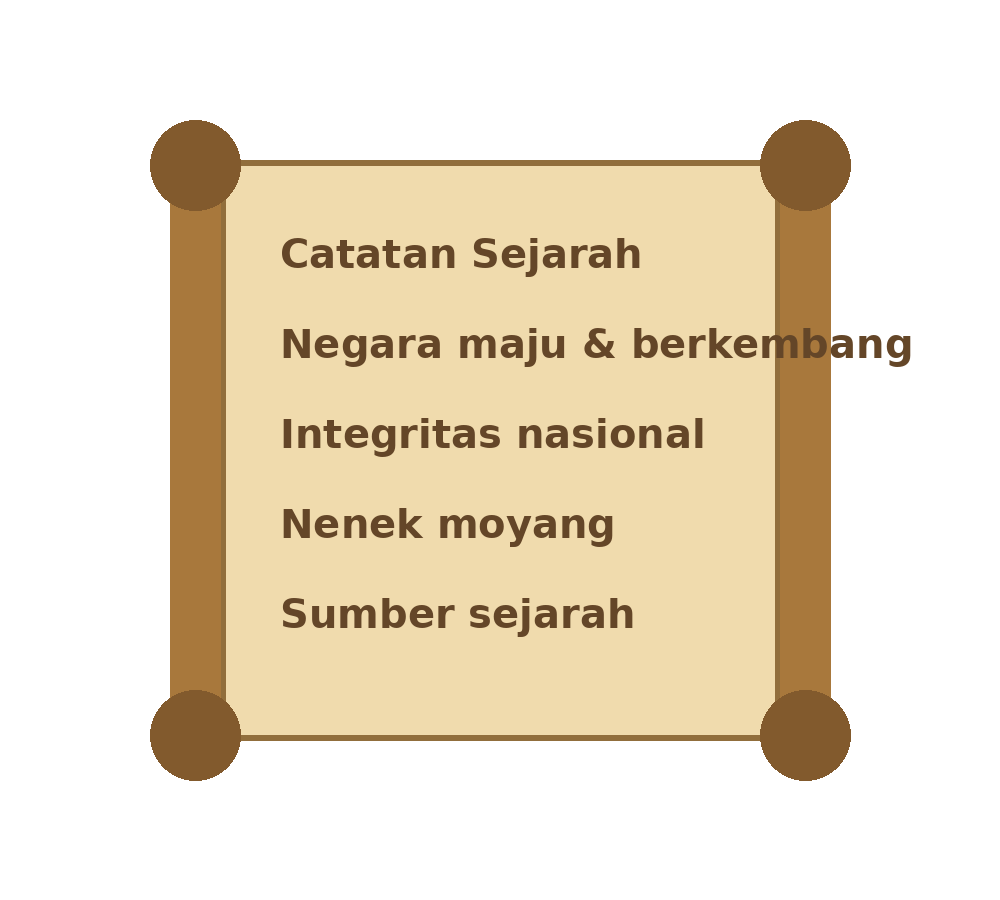
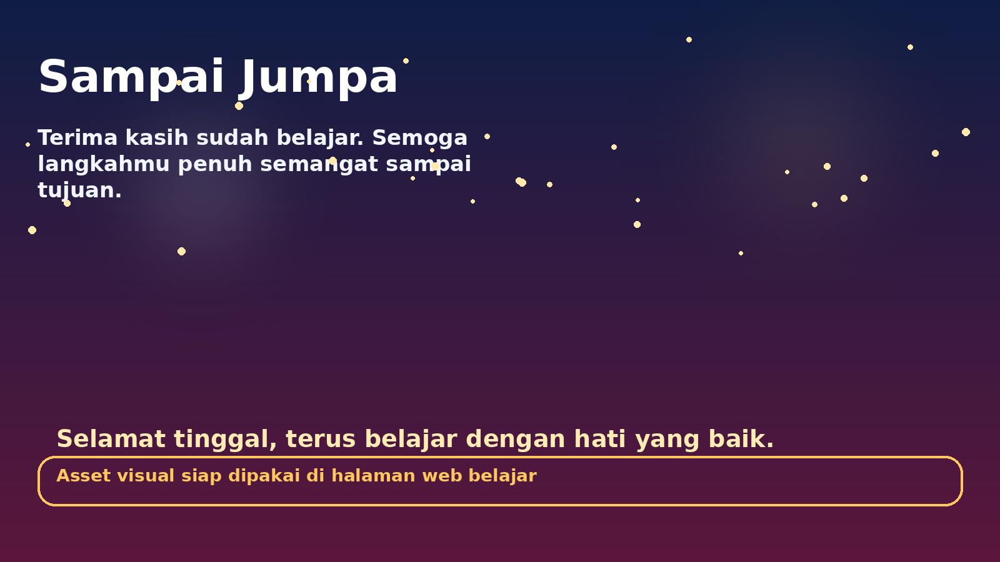
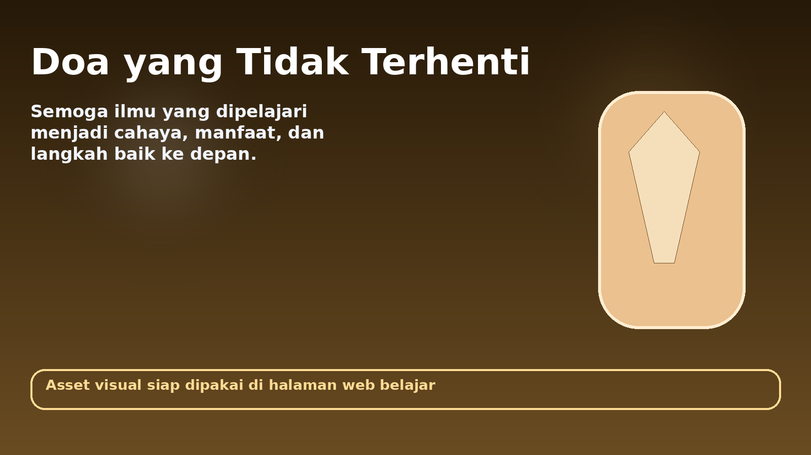

Web belajar animatif buat Senbud dan IPS. Vibenya hidup, semangat, rame, dan bikin belajar terasa lebih seru dari awal sampai penutup.
Tarik napas, siapin fokus, dan bikin hari ini jadi sesi belajar yang paling mantap. Semua halaman dibikin hidup supaya semangatnya terus naik.
Full animasi tarian daerah, wayang, dan nuansa tradisional biar suasana belajarnya berasa hidup dan seru.


Nuansa sejarah, perjuangan, peta lama, dan elemen historis bergerak supaya belajar IPS terasa megah, menarik, dan bikin semangat.



Di bawah ini dipisah jelas mana kisi-kisi Senbud dan mana kisi-kisi IPS, lalu ditutup dengan animasi selamat tinggal dan doa yang tidak terhenti.

